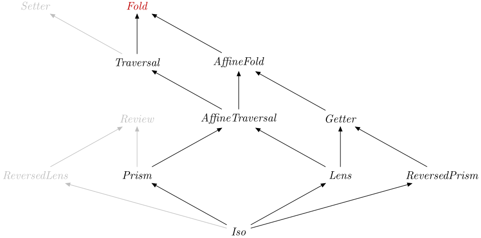

| Safe Haskell | Safe-Inferred |
|---|---|
| Language | Haskell2010 |
Optics.Fold
Description
A Fold S AA
from a container of type S. For example, toListOf can be used to obtain
the contained elements as a list. Unlike a Traversal,
there is no way to set or update elements.
This can be seen as a generalisation of traverse_, where the type S does
not need to be a type constructor with A as the last parameter.
A close relative is the AffineFold, which is a Fold
that contains at most one element.
Synopsis
- type Fold s a = Optic' A_Fold NoIx s a
- foldVL :: (forall f. Applicative f => (a -> f u) -> s -> f v) -> Fold s a
- foldOf :: (Is k A_Fold, Monoid a) => Optic' k is s a -> s -> a
- foldMapOf :: (Is k A_Fold, Monoid m) => Optic' k is s a -> (a -> m) -> s -> m
- foldrOf :: Is k A_Fold => Optic' k is s a -> (a -> r -> r) -> r -> s -> r
- foldlOf' :: Is k A_Fold => Optic' k is s a -> (r -> a -> r) -> r -> s -> r
- toListOf :: Is k A_Fold => Optic' k is s a -> s -> [a]
- sequenceOf_ :: (Is k A_Fold, Applicative f) => Optic' k is s (f a) -> s -> f ()
- traverseOf_ :: (Is k A_Fold, Applicative f) => Optic' k is s a -> (a -> f r) -> s -> f ()
- forOf_ :: (Is k A_Fold, Applicative f) => Optic' k is s a -> s -> (a -> f r) -> f ()
- folded :: Foldable f => Fold (f a) a
- folding :: Foldable f => (s -> f a) -> Fold s a
- foldring :: (forall f. Applicative f => (a -> f u -> f u) -> f v -> s -> f w) -> Fold s a
- unfolded :: (s -> Maybe (a, s)) -> Fold s a
- has :: Is k A_Fold => Optic' k is s a -> s -> Bool
- hasn't :: Is k A_Fold => Optic' k is s a -> s -> Bool
- headOf :: Is k A_Fold => Optic' k is s a -> s -> Maybe a
- lastOf :: Is k A_Fold => Optic' k is s a -> s -> Maybe a
- andOf :: Is k A_Fold => Optic' k is s Bool -> s -> Bool
- orOf :: Is k A_Fold => Optic' k is s Bool -> s -> Bool
- allOf :: Is k A_Fold => Optic' k is s a -> (a -> Bool) -> s -> Bool
- anyOf :: Is k A_Fold => Optic' k is s a -> (a -> Bool) -> s -> Bool
- noneOf :: Is k A_Fold => Optic' k is s a -> (a -> Bool) -> s -> Bool
- productOf :: (Is k A_Fold, Num a) => Optic' k is s a -> s -> a
- sumOf :: (Is k A_Fold, Num a) => Optic' k is s a -> s -> a
- asumOf :: (Is k A_Fold, Alternative f) => Optic' k is s (f a) -> s -> f a
- msumOf :: (Is k A_Fold, MonadPlus m) => Optic' k is s (m a) -> s -> m a
- elemOf :: (Is k A_Fold, Eq a) => Optic' k is s a -> a -> s -> Bool
- notElemOf :: (Is k A_Fold, Eq a) => Optic' k is s a -> a -> s -> Bool
- lengthOf :: Is k A_Fold => Optic' k is s a -> s -> Int
- maximumOf :: (Is k A_Fold, Ord a) => Optic' k is s a -> s -> Maybe a
- minimumOf :: (Is k A_Fold, Ord a) => Optic' k is s a -> s -> Maybe a
- maximumByOf :: Is k A_Fold => Optic' k is s a -> (a -> a -> Ordering) -> s -> Maybe a
- minimumByOf :: Is k A_Fold => Optic' k is s a -> (a -> a -> Ordering) -> s -> Maybe a
- findOf :: Is k A_Fold => Optic' k is s a -> (a -> Bool) -> s -> Maybe a
- findMOf :: (Is k A_Fold, Monad m) => Optic' k is s a -> (a -> m Bool) -> s -> m (Maybe a)
- lookupOf :: (Is k A_Fold, Eq a) => Optic' k is s (a, v) -> a -> s -> Maybe v
- universeOf :: Is k A_Fold => Optic' k is a a -> a -> [a]
- cosmosOf :: forall k is a. Is k A_Fold => Optic' k is a a -> Fold a a
- paraOf :: Is k A_Fold => Optic' k is a a -> (a -> [r] -> r) -> a -> r
- pre :: Is k A_Fold => Optic' k is s a -> AffineFold s a
- backwards_ :: Is k A_Fold => Optic' k is s a -> Fold s a
- summing :: (Is k A_Fold, Is l A_Fold) => Optic' k is s a -> Optic' l js s a -> Fold s a
- failing :: (Is k A_Fold, Is l A_Fold) => Optic' k is s a -> Optic' l js s a -> Fold s a
- data A_Fold :: OpticKind
Formation
Introduction
foldVL :: (forall f. Applicative f => (a -> f u) -> s -> f v) -> Fold s a Source #
Obtain a Fold by lifting traverse_ like function.
foldVL.traverseOf_≡idtraverseOf_.foldVL≡id
Elimination
foldOf :: (Is k A_Fold, Monoid a) => Optic' k is s a -> s -> a Source #
Combine the results of a fold using a monoid.
foldMapOf :: (Is k A_Fold, Monoid m) => Optic' k is s a -> (a -> m) -> s -> m Source #
Fold via embedding into a monoid.
foldrOf :: Is k A_Fold => Optic' k is s a -> (a -> r -> r) -> r -> s -> r Source #
Fold right-associatively.
foldlOf' :: Is k A_Fold => Optic' k is s a -> (r -> a -> r) -> r -> s -> r Source #
Fold left-associatively, and strictly.
toListOf :: Is k A_Fold => Optic' k is s a -> s -> [a] Source #
Fold to a list.
>>>toListOf (_1 % folded % _Right) ([Right 'h', Left 5, Right 'i'], "bye")"hi"
sequenceOf_ :: (Is k A_Fold, Applicative f) => Optic' k is s (f a) -> s -> f () Source #
Evaluate each action in a structure observed by a Fold from left to
right, ignoring the results.
sequenceA_≡sequenceOf_folded
>>>sequenceOf_ each (putStrLn "hello",putStrLn "world")hello world
traverseOf_ :: (Is k A_Fold, Applicative f) => Optic' k is s a -> (a -> f r) -> s -> f () Source #
Traverse over all of the targets of a Fold, computing an
Applicative-based answer, but unlike traverseOf do not
construct a new structure. traverseOf_ generalizes
traverse_ to work over any Fold.
>>>traverseOf_ each putStrLn ("hello","world")hello world
traverse_≡traverseOf_folded
forOf_ :: (Is k A_Fold, Applicative f) => Optic' k is s a -> s -> (a -> f r) -> f () Source #
A version of traverseOf_ with the arguments flipped.
Computation
traverseOf_(foldVLf) ≡ f
Additional introduction forms
foldring :: (forall f. Applicative f => (a -> f u -> f u) -> f v -> s -> f w) -> Fold s a Source #
Additional elimination forms
lengthOf :: Is k A_Fold => Optic' k is s a -> s -> Int Source #
Calculate the number of targets there are for a Fold in a given
container.
Note: This can be rather inefficient for large containers and just like
length, this will not terminate for infinite folds.
length≡lengthOffolded
>>>lengthOf _1 ("hello",())1
>>>lengthOf folded [1..10]10
>>>lengthOf (folded % folded) [[1,2],[3,4],[5,6]]6
maximumOf :: (Is k A_Fold, Ord a) => Optic' k is s a -> s -> Maybe a Source #
Obtain the maximum element (if any) targeted by a Fold safely.
Note: maximumOf on a valid Iso, Lens
or Getter will always return Just a value.
>>>maximumOf folded [1..10]Just 10
>>>maximumOf folded []Nothing
>>>maximumOf (folded % filtered even) [1,4,3,6,7,9,2]Just 6
maximum≡fromMaybe(error"empty").maximumOffolded
In the interest of efficiency, This operation has semantics more strict than
strictly necessary. \o -> has lazier
semantics but could leak memory.getMax . foldMapOf o Max
minimumOf :: (Is k A_Fold, Ord a) => Optic' k is s a -> s -> Maybe a Source #
Obtain the minimum element (if any) targeted by a Fold safely.
Note: minimumOf on a valid Iso, Lens
or Getter will always return Just a value.
>>>minimumOf folded [1..10]Just 1
>>>minimumOf folded []Nothing
>>>minimumOf (folded % filtered even) [1,4,3,6,7,9,2]Just 2
minimum≡fromMaybe(error"empty").minimumOffolded
In the interest of efficiency, This operation has semantics more strict than
strictly necessary. \o -> has lazier
semantics but could leak memory.getMin . foldMapOf o Min
maximumByOf :: Is k A_Fold => Optic' k is s a -> (a -> a -> Ordering) -> s -> Maybe a Source #
Obtain the maximum element (if any) targeted by a Fold according to a
user supplied Ordering.
>>>maximumByOf folded (compare `on` length) ["mustard","relish","ham"]Just "mustard"
In the interest of efficiency, This operation has semantics more strict than strictly necessary.
maximumBycmp ≡fromMaybe(error"empty").maximumByOffoldedcmp
minimumByOf :: Is k A_Fold => Optic' k is s a -> (a -> a -> Ordering) -> s -> Maybe a Source #
Obtain the minimum element (if any) targeted by a Fold according to a
user supplied Ordering.
In the interest of efficiency, This operation has semantics more strict than strictly necessary.
>>>minimumByOf folded (compare `on` length) ["mustard","relish","ham"]Just "ham"
minimumBycmp ≡fromMaybe(error"empty").minimumByOffoldedcmp
findMOf :: (Is k A_Fold, Monad m) => Optic' k is s a -> (a -> m Bool) -> s -> m (Maybe a) Source #
The findMOf function takes a Fold, a monadic predicate and a structure
and returns in the monad the leftmost element of the structure matching the
predicate, or Nothing if there is no such element.
>>>findMOf each (\x -> print ("Checking " ++ show x) >> return (even x)) (1,3,4,6)"Checking 1" "Checking 3" "Checking 4" Just 4
>>>findMOf each (\x -> print ("Checking " ++ show x) >> return (even x)) (1,3,5,7)"Checking 1" "Checking 3" "Checking 5" "Checking 7" Nothing
findMOffolded:: (Monad m, Foldable f) => (a -> m Bool) -> f a -> m (Maybe a)
lookupOf :: (Is k A_Fold, Eq a) => Optic' k is s (a, v) -> a -> s -> Maybe v Source #
The lookupOf function takes a Fold, a key, and a structure containing
key/value pairs. It returns the first value corresponding to the given
key. This function generalizes lookup to work on an arbitrary Fold
instead of lists.
>>>lookupOf folded 4 [(2, 'a'), (4, 'b'), (4, 'c')]Just 'b'
>>>lookupOf folded 2 [(2, 'a'), (4, 'b'), (4, 'c')]Just 'a'
universeOf :: Is k A_Fold => Optic' k is a a -> a -> [a] Source #
Given a Fold that knows how to locate immediate children, retrieve all of
the transitive descendants of a node, including itself.
Since: 0.4.1
cosmosOf :: forall k is a. Is k A_Fold => Optic' k is a a -> Fold a a Source #
Given a Fold that knows how to locate immediate children, fold all of the
transitive descendants of a node, including itself.
Since: 0.4.1
paraOf :: Is k A_Fold => Optic' k is a a -> (a -> [r] -> r) -> a -> r Source #
Perform a fold-like computation on each value, technically a paramorphism.
Since: 0.4.1
Combinators
pre :: Is k A_Fold => Optic' k is s a -> AffineFold s a Source #
Convert a fold to an AffineFold that visits the first element of the
original fold.
For the traversal version see singular.
backwards_ :: Is k A_Fold => Optic' k is s a -> Fold s a Source #
This allows you to traverse the elements of a Fold in the opposite order.
Monoid structures
Fold admits (at least) two monoid structures:
summingconcatenates results from both folds.failingreturns results from the second fold only if the first returns no results.
In both cases, the identity element of the monoid is
ignored, which returns no results.
There is no Semigroup or Monoid instance for Fold, because there is
not a unique choice of monoid to use, and the (<>) operator could not be
used to combine optics of different kinds. When porting code from lens
that uses <> to combine folds, use summing instead.
summing :: (Is k A_Fold, Is l A_Fold) => Optic' k is s a -> Optic' l js s a -> Fold s a infixr 6 Source #
failing :: (Is k A_Fold, Is l A_Fold) => Optic' k is s a -> Optic' l js s a -> Fold s a infixl 3 Source #
Try the first Fold. If it returns no entries, try the second one.
>>>toListOf (ix 1 `failing` ix 0) [4,7][7]>>>toListOf (ix 1 `failing` ix 0) [4][4]
Subtyping
data A_Fold :: OpticKind Source #
Tag for a fold.
Instances
